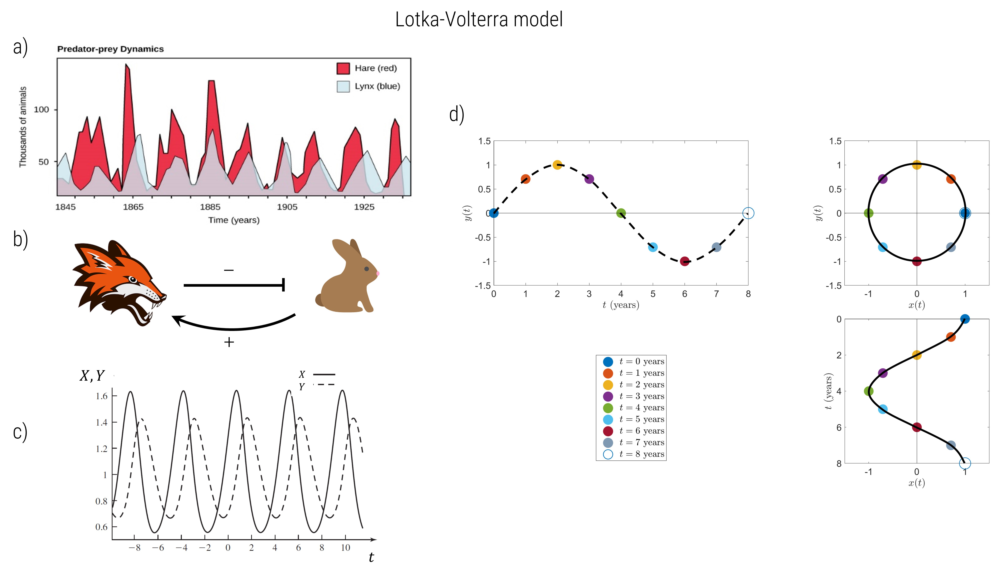
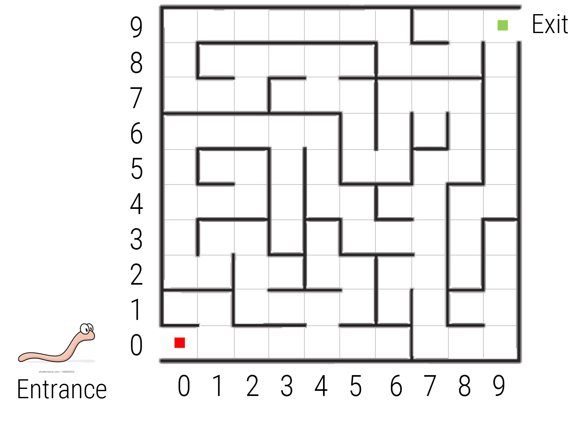

Tutorial 02
Contents
Tutorial 02¶
Question 1¶
Simple equation for predator prey motion¶
Oscillations are found throughout many diverse phenomena in ecology and evolution. Predator-prey dynamics are amongst the most well-known as shown in Fig. 1a with data on populations of hares and lynxes. Simple versions of these dynamics are represented by the Lotka-Volterra model Fig. 1b, which produce oscillating solutions for hares and lynxes Fig. 1c. A powerful idea is that the motion of predator-prey (and many other similar systems) can be represented as different projections of motion on a circle as shown in Fig. 1d. Why we would want to do this is explored in this tutorial and how using the concept of complex numbers is the most natural and compact way to describe circular motion.

The plot of \(X\) vs \(Y\) is called a phase plane and shows the behaviour is very well-represented by simple sinusoidal behaviour for prey \(X\) and predator \(Y\), about some average value \(X^*\) and \(Y^*\) for predator and prey respectively:
\begin{gather*}
X(t) &=& X^+R_1\cos(\omega t-\phi) \tag{1}\ Y(t) &=& Y^+R_2 \sin(\omega t-\phi) \tag{2} \end{gather*}
where \(\omega = 2\pi/T\) is the angular velocity of the oscillations, where \(T\) is the period. If we assume the predator natural rate of death is the same as rate of growth of prey and that the predator is \(100\%\) efficient in gaining energy for growth from death of prey due to predation, then it turns out \(R_1=R_2\); if we let \(x(t)=X(t)-X^*\) and \(y(t)=Y(t)-Y^*\), be the number of excess prey and predators, then our equation of motion is
\begin{gather*}
x(t) &=& R\cos(\omega t-\phi) \tag{3}\ y(t) &=& R\sin(\omega t-\phi) \tag{4}. \end{gather*} an example of this is shown in Fig. 1.
a) With reference to Fig. 1d, verify that for each of the times \(t=0,1,2,3,…8\) years the values of \(x(t)\) and \(y(t)\) match their corresponding values on the \(x-y\) plane and that as time progresses the motion is along the circumference of the circle. Which direction is the motion on the circle: clockwise or anti-clockwise? What is the relationship of \(x(t)\) and \(y(t)\) with respect to the motion on the circle?
b) Reproduce Fig.1d, by plotting plot \(x(t)\) vs \(t\) & \(y(t)\) vs \(t\), and \(x(t)\) vs \(y(t)\) for times \(t=0,1,2,3,…8\) years for \(\omega=\pi/4\) years\(^{-1}\) with \(R=1\) & \(\phi=\pm\pi/4\) and label each point with their corresponding value of \(t\). What does changing the phase \(\phi\) do?
c) Repeat for \(\omega=\pi/2\), remembering to label points with time \(t\). What does doubling the rate \(\omega\) do?
d) By setting \(t=0\) in Eqns.(3) and (4) write down the initial condition \(x_0=x(0)\) & \(y_0=y(0)\) and mark on the plot for \(\phi=\pi/4\), the initial value \((x_0,y_0)\) on the plane. What do you notice? Is the initial angle of the point \(\pi/4\) or \(-\pi/4\)?
e) Divide \(y_0\) by \(x_0\) to show that
where \(\tan^{-1}\) is the inverse of the tangent function \(\tan\), such that \(\theta = \tan^{-1}(\tan(\theta))\).
f) Now for population dynamics, \(\theta\) represents the phase of the predator-prey cycle, which for a pure sinusoidal behaviour increases linearly in time, \(\theta=\omega t\). Estimate \(T\) from the graph of Lynx-Hare dynamics (to nearest year), and given the relationship between \(T\) and \(\omega\) given above calculate \(\omega\) and state the units of \(\omega\).
g) Show that the equations of motion (Eqns.(3) and (4)) obey the implicit equation for a circle
(Hint: \(\sin^2(\theta)+\cos^2(\theta)=1\)). What is the significance of this result?
h) If at \(t=0\) there are an excess of \(80\) hares and \(60\) lynxes, calculate a prediction of the number of excess hares and lynxes at time \(t=15\) years, using the above equations. Your answer should be negative — why is that ok?
i) If at some time \(t\) the excess number of lynxes is \(10\) calculate the possible number of excess hares (to the nearest integer) assuming this circular model is correct. Can you calculate from this information the time \(t\)? Discuss what extra information you would need to determine the number of hares and the time of observation (Hint: your diagrams of the \textit{phase portrait} (part a&b) should provide a clue).
Question 2}¶
Complex worms¶

Imagine a worm placed in a 2D maze. They are intelligent worms that happen to understand just two mathematical instructions for each move at a time:
crawl a distance \(x\)
then rotate \(90^\circ\) or \(\pi/2\) radians (anti-clockwise) and then crawl a distance \(y\)
in other words they move like the Knight chess piece, except with arbitrary lengths \(x\) and \(y\) of the ``capital L’’.
a) Starting at the red square and ending at the green square, your task is to write down the list of instructions for each step in turn, which will navigate the worm through this maze, where for each step you specify \(x+iy\) where \(i\) indicates ``rotate by \(90^\circ\)’’. For a given path you want to specify the minimal number of steps. \ (N.B. assume the worm only moves in whole squares (\(x\) and \(y\) are integers) and that they can move left/right and up/down(i.e. \(x\) and \(y\) can take negative values). (Hint: 1st move I would suggest is \(4+i\times1=4+i\)).
b) Given your solution, what do you notice if you ``sum’’ any two adjacent steps by the rule
c) Add up all the steps using this addition rule – what do you find?
d) A new species of worm is discovered that follows two different sets of instructions:
rotate an angle \(\theta\) (relative to the \(x\)-axis or horizontal)
jump a distance \(r\) in that direction
which is communicated by the mathematical instruction \(re^{i\theta}\). If this worm follows the same path as the worm of the previous species, what are the set of instructions you would need to supply? \ (N.B. This species of worm only understands radians, not degrees!)\ (Hint: use your trigonometric skills! And you need only provide answer to \(1\) d.p.)
e) If the worm jumps to the exit in \(1\) step what instruction would you provide?
Question 3¶
Multiplication & rotation using complex numbers¶
The previous question has introduced the idea that one way to describe points in a plane, is to use a new type of number called complex numbers (a better name might be 2D numbers for 2 dimensional), where \(i\) represents a rotation by \(90^\circ\) (\(\pi/2\) radians) – by convention anti-clockwise.
(For historical reasons these are called imaginary numbers — though there is nothing imaginary about them!)
a) Can you solve the equation \(z^2=-1\) using real numbers? Why not?
b) Given intuition from the previous question (Q2) that \(i\) represents a rotation \(90^\circ\) (\(\pi/2\) radians), what is \(i\times i=i^2=?\) Hence, what is \(\sqrt{-1}\)? Solve \(z^2=-1\) using complex numbers.
c) Solve i) \((z-1)^2=-1\) and ii) \((z-2)^2=-4\) using complex numbers.
d) Given two complex numbers \(z=a+ib\) and \(w=c+id\), multiply them by using the normal rules of multiplying out brackets, but in addition, using the rule just discovered that \(i^2=-1\) to show $\(zw = ac-bd +i(ad + bc).\)$
e) Let the complex number \(u(\theta)=\cos\theta+i\sin\theta\). Calculate \(uz\), for \(\theta=\pi/4\), using the complex number representation of each of the vectors below and sketch where they lie on the \(x\) - \(y\) plane (also called the real-imaginary plane):
What does the complex number \(u(\theta=\pi/4)\) do?
f) Repeat above for \(zu\). What do you notice – what is the difference between post- or pre-multiplication of a complex number?
g) Complex numbers provide a simple and compact way of describing rotations, in particular in their polar-form \(re^{i\theta}\); the connection between the polar form of a complex number of it’s Cartesian form is found by Euler’s formula:
Use Euler’s formula to show that Eqn. 3 can be expressed as follows
where \(z(t) = x(t)+iy(t)\), and \(\phi\) is as given by Eqn. 5. \item By setting \(t=0\) show that this can be expressed explicitly in terms of the initial condition \(z(0)=z_0=x_0+iy_0\), using your expressions for \(x_0\) and \(y_0\) derived in Q1d:
\item Using your estimate of \(\omega\) from Q1 use this last equation to predict the excess number of hares and lynxes at time \(t=15\) years, given at \(t=0\) there are an excess of \(80\) hares and \(60\) lynxes. Your answer should agree with Q1h.